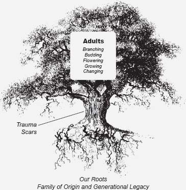
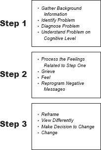

HOW IT FEELS, NOT HOW IT LOOKS
I wish there were a mental health diagnosis for serial grief. I am not mentally ill. Mostly just sad and grieving the vision of the mother I so desperately wanted.
—Sonny, 39
As a child growing up, you were likely very good at denying, numbing, or compensating for your own feelings rather than allowing yourself to feel them. You probably do this now as an adult too. Your recovery begins in this chapter. Here I will guide you to reclaim your emotions and enhance your sense of self.
Now that you have a solid understanding of the psychological dynamics you were subject to as a daughter of a narcissistic mother and how they have adversely affected your life, it is time for you to come to terms with the past, release your unrealistic expectations of your mother, and take charge of your life to heal. Now it’s your time to make your life more peaceful and comfortable.
You will follow the blueprint for healing in this chapter that I used for my own recovery and continue to use for my clients. It works if you follow the steps sequentially. You will feel worlds better than you ever have. However, it is important to note that you cannot completely “cure” the scars of a childhood trauma. You work with them, process them, and learn how to deal with them differently so that you feel better.
I liken our lives to a tree. Each of us, like a tree, has roots (our upbringing); long, sturdy trunks (our development); and branches that flower and grow in our adult lives. Your trunk or development phase bears the scars, which don’t really go away; they are part of who we are. But recovery work helps us to treat any gashes, to fill them in, supply balm and seal them gently, and takes away the old and recurring pain, changing the original trauma, allowing you to grow around it and up and away from it. Please keep this in mind, so that you do not become discouraged and misled. Really, it is a relief to know that you don’t have to totally remove those scars. The things that happened to us are important to acknowledge; they play into who we are today. Yet they do not define who we are today, and by working in recovery, you refuse to allow your past to tell you who you are. You accept and face your past as part of you, and you move on.

Our Growth and Development
I believe that you begin to heal when you accept the fact that your mother was narcissistic and that she hurt you. Then you grieve for the life and love you do not have. I will teach you how to allow yourself the gift of acceptance and how to use the precious time for grieving. Read on for assistance in how to do this.

Three-Step Recovery Model
The Three Steps of Recovery
Recovery entails three steps. The first step is to understand the problem, to diagnose it, and to get the background information that defines it. This is true for any emotional or psychological issue you may deal with in your life. This is what a therapist works on with you in the beginning of a therapeutic relationship. You’ve just completed Step One—you’ve read about the problem and how it plays out in symptoms and life patterns. This is the cognitive or intellectual understanding that you will need to go on to the next steps.
In Step Two, you process the feelings related to the identified problem. That is what this chapter is about. As a daughter of a narcissistic mother you had feelings that were not often validated or acknowledged. The earlier sections of the book helped you to identify them, and now it is time to work with those feelings.
I am going to tell you something very important that I have learned in 28 years of being a therapist: Most people like to skip Step Two—this step. Daughters tend to like Step One and love Step Three of recovery. But, most understandably, we want to skip the most important step that makes the biggest difference, because it is painful to wade through the marshes of past trauma. It is difficult to push through the denial and let yourself feel the pain. Who wants to feel pain, right?
Nonetheless, the second step is where you get to learn how to deal with those difficult things called feelings. It’s not fun, but it’s worth it. When Lauren, Elyse, other clients, and I allowed this grief process, we began to see how we could finally let go.
Processing feelings is very different from just talking about them. To process means to talk about the trauma, and simultaneously feel the pain in a cacophonous, blasting, rock concert. You can tell something in a story form without feeling it, but that is not processing. This is the only way to release trauma from your body. For example, I can tell you about going to my grandmother’s funeral and fill you in on details about her death, the service, the people, the family, the minister, the flowers, and the travel, etc., but this is talking about the funeral and her death. It is describing the events. If I were processing it, I would be telling you the same story but feeling the loss and the grief at the same time. In this very different scenario, you would see my tears and feel my pain, and so would I, as I described the situation and how it affected me. This chapter will help you, too, engage in this kind of grieving.
When people skip Step Two of recovery, Step Three does not work. I believe that this is why many therapeutic programs are unsuccessful, because folks skip the middle, the difficult part. We have to clean out trauma before we can learn to look at our situation in a healthy and different way.
Step Three, briefly, is about “reframing,” a therapeutic word that means looking at the problem through another set of lenses, or in a new way. This is the fun part of recovery, when you begin to see things differently and become free of the symptoms and the effects of the trauma of having had a narcissistic mother. You make decisions for yourself that are very different from when you were feeling like a victim of wrongdoing. You begin to get in touch with your real feelings, values, and belief system. You find the authentic you and allow it to function in your own way. This is freedom, and I wish this for each reader who is with me here.
A Closer Look at Recovery
We move now to specifics for healing the unmothered child. The five basic areas to be covered in part 3 of this book are listed here for easy reference:
Let’s begin with acceptance.
Acceptance of Mother’s Limitations
To realize that your own mother may not be capable of real love and empathy is shocking. If you ever allowed yourself to think this before, you might have been unwilling to accept it. Mothers are supposed to be the most reliable source of love, comfort, and empathy, and if your mother did not provide that for you, you most likely denied your feelings about it. Daughters often blame themselves for their mother’s inability to love them. Remember my client who said, “If my own mother can’t love me, who can?” Accepting their mother’s limitations is difficult for all daughters.
Before you can grieve, you have to accept the reality of what you have gone through. Think of it like this: A teacher trying to teach a three-year-old to read at college level might feel disappointment, anger, even shame at his failure to accomplish this goal, until he realizes, of course, that the student is not really capable of the task. Most narcissists lack the capacity to give significant, authentic love and empathy, and you have no choice but to deal with this reality. Accepting that your own mother has this limited capacity is the first step. Let go of the expectation that it will ever be different.
Most daughters I know have gone through long periods in their lives not understanding this, always wishing and hoping that the next encounter with their mother will be different. This sets up not only unrealistic expectations for the daughter, but encourages her to keep going back to try again, for which the reward is additional sadness, disappointment, pain, anger, and exasperation. After all, we are talking about your mother—the person who was the center of your world and whom you loved and needed more than anyone else. I want to acknowledge again how difficult this is to do, but you must do it so you can move on toward your own recovery.
Remember also that narcissism is a spectrum disorder and our mothers may have varying degrees of narcissism. Mothers with fewer narcissistic traits are more likely to have some hope of recovery if they are motivated to do so. But the further along the spectrum your mother is, the more likely it is that she will not change or seek treatment and therefore you must accept this fact.
Many of my clients wonder, “How do I do that?” Remember that you cannot change others. You can change only yourself. How you view things and how you deal with your perceptions is within your control. Changing your mother is not. You may wish that you could drag your mother to therapy with you, and many women do that. Sometimes this is worth pursuing, sometimes not.
In all events, however, the success of the recovery work rests entirely with you, the daughter. Let go of the belief that your mother can or will be different, and will ever be able to give you the love you deserve. Letting go will free you and allow you to find yourself. Decide to accept and realize that Mom’s inability, her incapacity, her illness, her limitations have hurt you. This beginning step takes you out of denial and forces you to deal with reality. It is a move toward health. Decide now. This act will give you back the control you need to pursue the important grief process that follows.
How Do I Know I Have Totally Accepted Mother’s Limitations?
To determine where you are in this process of accepting your mother’s limitations, you can ask yourself the following questions:
When you have successfully completed the acceptance part of recovery, you realize that no one can really meet your childhood needs, and you choose number eight above. The part of life when you were entitled to that kind of maternal nurturing is gone. You are willing to grieve the loss but fully understand that you can’t go back and get it and you can’t make it happen now with someone else. Remember, as an adult, you are not entitled to this. You are responsible for yourself, now willing to accept this accountability for your own needs and to find a way to meet them. With this in place, you are ready to grieve.
Teach Yourself to Grieve
Deal with your feelings before they deal with you.
—The rehab counselor in the movie Postcards from the Edge1
The grief process begins with another decision: to let your feelings be there. I had to teach myself how to do this, particularly when my feelings were sad or angry. As I learned to feel, there were some days when I would stay home from work, send the children to school, close the blinds, get the pillows, and just let myself cry, scream, hit pillows, or do whatever I needed to do to let out steam. At first, I just sat there and no feelings would surface, but I knew that there were mounds of feelings because they would come out in other ways when I least expected them. Eventually, giving myself this time, my tears would begin to leak and then pour. The trick was to let them be. To feel them. This is difficult when you have been taught to stuff it or suck it up or not to feel anything, to be phony, to pretend everything is all right when it isn’t.
Sit with those feelings. Sit with the pain. Manage the anxiety and depression that come with it so you can work through it. Don’t try to talk yourself out of it. Others around you may try to do this. No one wants to see you hurt, and your loved ones may not understand how important this is, so don’t listen to them. Let yourself feel! When the old denial tries to reassert itself, or the critical internal messages begin again, chase them away. Tell yourself that you deserve this time to heal.
It is common for you to feel like a wimp or to call yourself a baby. I do this on a regular basis, even now when I have feelings to process. I have to tell myself, “It’s okay to be a baby right now. Babies are sweet and innocent.” You won’t be a baby forever, I promise. It doesn’t last, because you work through it in this very way.
You may begin to try to rationalize away the pain. “I shouldn’t feel this way,” or “I didn’t have it that bad.” This won’t help. Whatever is there you need to release. Let it be. Sometimes in order to do this you have to be quiet and take time to be alone. If you are used to keeping busy to avoid the pain, or to using a substance or some addiction to numb the pain, you will notice the feelings coming up when you slow down and sit quietly or allow yourself to be alone. This is very important to do. Set aside some time alone solely for this grieving process. Do it several times until you begin to feel relief.
Try several different things until you find what works for you. I do best when I am home alone with shades drawn. Some women like to take long walks, go for long runs, hike in the mountains, go for long drives, or sit in coffee shops. Everyone is different, and it is important for you to find your comfort zone. The most important thing is that you allow it to happen. Having been taught not to do this, daughters of narcissistic mothers at first feel awkward giving themselves this emotional attention. But you can do it.
The Stages of Grief
The natural grief process as written about by Dr. Elisabeth Kübler-Ross in On Death and Dying consists of five stages: denial, anger, bargaining, depression, and acceptance.2 For your recovery, we will be using these stages, too, but we put acceptance first. We have already been engaged in denial and bargaining with Mother for a long time, and without acceptance we cannot move on to deal with our true feelings. Without acceptance, we stay in denial. After acceptance, we can process the anger and depression of our loss so that we can free ourselves from the pain we have felt over a lifetime. Let’s look at some examples of how this works for us.
OUR STAGES OF GRIEF
During this grief process, you will bounce around through all the stages, back and forth. Don’t move on until you solidly accept that your mother was indeed narcissistic and did not give you the love you needed and wanted. For only then can you properly grieve. If you find yourself not accepting, go back and work on it again. It is the prerequisite for the work to come.
Use a Journal
Using a journal to get through the recovery process will help you immensely. Throughout this recovery program, I will be referring to how writing things down in a journal keeps everything in one place. Journaling is a way to record the feelings that are coming to the surface and also helps you to review them and check on your progress. Some daughters like to write things out longhand, while others are more comfortable typing a computer journal. I have a grief file on my computer that I visit at the end of each day. There I can dump feelings that have surfaced that I need to deal with. Writing down feelings is another way of getting them out of your system, and by journaling you are reinforcing the release of your trauma. Do not worry about spelling, grammar, or sentence structure. Just write whatever is coming up for you.
Many daughters have resisted using a journal at first because they do not like to write or they are fearful of someone finding the information. Nonetheless, I encourage you to use a journal because it means you are taking your recovery seriously. You commit to writing down, keeping track of it, and monitoring your progress. Your health and happiness are worth this investment of time. You want to take control of your own healing and deal consciously with these lifelong feelings or they will control you.
Grieving the Mother You Never Had
Every little girl deserves to have a mother who is crazy about her. If you didn’t have a loving mother, you have a right to grieve the loss.
As you let feelings come up, recognize them, and write them down. Start with a list of what the ideal mother would look like to you. Think about either what you wanted or what you saw in other mothers you know. Contrast what you wanted to what you had with your own mother. Face the disappointments and the pain you felt. This is extremely important at this phase of the recovery. Find the holes. Write them down. It is okay to do this.
Some women wrote the following in their ideal mom list:
Even though most daughters feel sad that they did not receive the proper love from their mothers, they have a deep belief system ingrained from childhood that they do not or did not deserve a loving mother. But you deserve it! And if you didn’t have this love, you must acknowledge that you didn’t get it and that, as a result, you have this hole, a void, in your emotional development. Facing this sadness is crucial to developing your sense of self today. I’m not saying that you become permanently sad about this, but that you recognize it, face it, and allow yourself to feel sad about the pain this has caused you. We will move beyond this stage of grief. This is not where you will live the rest of your life.
Don’t listen to others as you go through this process. Well-meaning friends and loved ones often say things like “Forget it already.” “You can’t undo the past—quit trying.” “Quit thinking about the past and be in the present.” Those closest to you (and some not so close) will discourage you from doing this important work because they do not understand just how important it is. They may not want to see you suffer, so they try to fix it. They don’t understand that if you don’t face this sadness, it will remain part of you forever. Do not listen to this unqualified advice. This is precisely why so many people today are projecting their feelings, misbehaving, creating crises for themselves and others, suffering from depression and anxiety, and are not being accountable for their own actions and emotions—they’re not facing the truth about their own pain. I am giving you, from personal and professional experience, the “key” to working through the third step of recovery so that it is effective. If you ignore this step out of fear or because you listened to others’ opinions, your recovery won’t work. This step is the most important step of recovery.
Sometimes children understand the need to grieve and cry better than adults do. As I was writing this chapter, a friend e-mailed me a story about a four-year-old who understood something that many adults have forgotten.
This child’s next-door neighbor was an elderly gentleman who had recently lost his wife. Upon seeing the man cry, the little boy went into the old gentleman’s yard, climbed onto his lap, and just sat there. When his mother asked what he had said to the neighbor, the little boy said, “Nothing, I just helped him cry!”
Your grieving may take the form of intense sadness, anger, and even rage. Don’t act on these feelings other than to write them down. Don’t be destructive to yourself or others, but let yourself feel these emotions. Grieve until you can’t stand yourself anymore. I know I’m done with grieving something when I am sick of myself! Eventually you will go from feeling like you are carrying huge luggage with you every day of your life to being a light traveler who has discarded her baggage and is now feeling only intense relief.
The Expected Guilt
Guilt will rear its ugly head. Our culture teaches us that “good girls don’t hate their mothers,” so as you feel the anger, rage, and sadness, you can expect to feel guilt too. Let it be okay to feel guilt for right now. In nearly every interview and clinical session I have done with daughters of narcissistic mothers, the daughter will mention how bad she feels that she is talking negatively about her mother. It is a taboo that you must work through to get to the other side. I am not advocating that you hate her or express your anger to her. The rage will not last if you allow yourself to feel it now. You have to face your losses and disappointments before you can get past them. You are aiming to get past blame to that point of deeper understanding and peace within yourself. This will allow you to be at peace with your mother too.
GRIEVING THE LOSS OF THE CHILD YOU DIDN’T GET TO BE
The next specific area of grief is grieving for the little “you” who didn’t get to exist because you had to be an early caretaker for your mother, and sometimes for the whole family.
Think about what you might have been able to do if you had been allowed just to be a kid. Imagine yourself doing those things right now. Write them down and again look at what you missed out on. Let your feelings be there. Feel them. If you are artistic, draw some pictures of you doing those things you wanted to do. Maybe as an adult you can do them now. We will be discussing this more in chapter 12.
When I first worked through this stage of grief in my own recovery, I used an exercise that I often use with clients now. I would sit in a rocking chair after my children were in bed and rock, close my eyes, and imagine myself as a small child. I would get this visual of a little girl with long blond braids and red cowboy boots. I would then hold out my arms and ask her to come to me and tell me what she needed from me. At her first appearance, she was a sad, stomping, red-booted, angry kid, with flailing braids, but as she talked to me, I became aware that I had to take care of her now, and recognize what she had missed as a child. We would cry together in that rocking chair. I spent a lot of time doing this exercise repeatedly. Your inner kid will talk to you, too, if you invite her in. Write down in your journal what happens in each interaction.
Another technique that is helpful in getting in touch with your little-kid needs is what I call “doll therapy.” Go shopping and find a little girl doll that resembles you between three and eight in age. Look until you find a doll you love, then bring her home and talk to her. Keep her on the bed, dresser, or couch so she is in plain sight to remind you that she has needs. Ask her what she has missed out on and what she needs from you now. Write down the thoughts that come up so that you don’t lose them as you get busy in your day-to-day routines, which is easy to do. You want to be able to refer to the list to see where you still need to grieve and how to give yourself what you didn’t get as a child.
As you engage in this grief process, allow the child or doll to speak to you at different ages. Allow her to go into her teen years, even up to age 18. Branded into many daughters’ memories are the moments when they needed a mother to be there for them during the difficult teen years. If your memories begin to go even into your twenties or into adulthood, go with them. If you give yourself the quiet and the time, the feelings that you need to process will surface.
It is reasonable to seek a therapist for help during this part of your recovery. Try to follow the suggestions here on your own first, as they have been helpful in my sessions with daughters. But if you are stuck and nothing is coming to the surface, using professional help in the process can make a big difference. You may want to find a professional mental health provider who knows a technique called EMDR (Eye Movement Desensitization and Reprocessing), an area of expertise that is particularly helpful with processing feelings. Go to the emdria.org Web site to find an EMDR-qualified professional in your community. This Web site also provides articles on EMDR and helps you understand how the technique works. In short, it is a treatment that is designed to process trauma and desensitize the related emotions. Having used it for years with my clients, I can attest to its effectiveness. And it works more quickly than straight talk therapy.
Finding the right therapist means finding one with the proper qualifications and with whom you can connect personally—the key to a successful therapeutic experience. For this particular kind of therapeutic work, I even recommend a female therapist who is older than you are. It is also helpful if the therapist is a mother or grandmother. These are not absolutes, but helpful in establishing trust and emotional connectivity.
The most important aspect of the first steps of recovery for daughters of narcissistic mothers, however, is doing the acceptance and grief work on your own as much as you can, before moving on to the next chapters and suggestions. If you don’t work on acceptance and grief, the rest of your recovery won’t “take.” You want to have a true and lasting recovery. If you think you have grappled with acceptance and grief, start on the next few chapters, and if you find they are not working for you, simply come back to these “first steps” and work them again. You want to—you have to!—clean this house first before you move along into emotional and spiritual home decorating.
The other side is where you will begin to grow and sustain yourself. When you’re ready, join me in doing that in the next chapter.